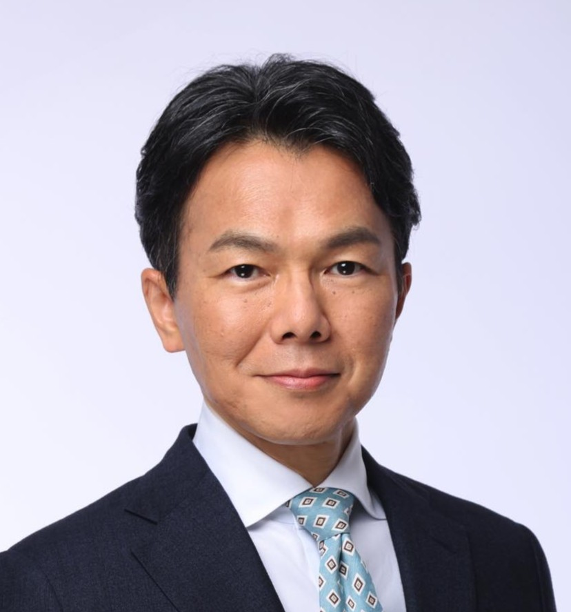

CASE 01
食品加工会社
- 取り組み前
- あらゆる媒体で求人を出しても、2年間で応募4名。
- 支援後
- 2か月で22名応募・3名採用。
- 採用から1年後
- 3名とも活躍。
ファミリー企業の経営者・後継者へ
求人を出しても、応募が来ない。
採用しても、続かない。
創業家の一員として、経営と現場の間に立ってきた経験を、
採用の実務から、経営と人事の仕組みづくりまで。
EXPLORE WASOU
CASE STUDIES
会社の強みを見つけ、採りたい人に届く伝え方へ。
採用と、その後の定着につながった支援事例をご紹介します。
※掲載内容は個別の支援事例であり、同様の成果を保証するものではありません。在籍状況は、各事例の確認時点のものです。
THE FAMILY BUSINESS VIEW
採用や定着の悩みは、求人の出し方だけでは捉えきれないことがあります。
今の社長が必要としている人と、先代や親族役員が求めている人が違う。面接の判断や、入社後に期待する役割が食い違ってしまう。
先代と今の社長で、言うことが違う。誰の指示を優先し、何を基準に動けばよいのか、社員には分からない。
創業家や古参社員には当たり前のことでも、新しく入った人には、その理由や背景が分からない。互いに真面目に働いていても、かみ合わなくなる。
こうした事情が、採用・定着・育成に影響している場合があります。
近い関係だからこそ、相手の変化や、考えの背景が見えにくくなることがあります。
和奏は、まず双方の話を否定せずに受け止めます。なぜそう考えるようになったのかを伺い、互いに見えていない想いや事実を言葉にします。
考え方が違っても、「会社を良くしたい」という思いは、多くの場合、共通しています。
その思いを出発点に、これからどんな会社にしていくのか。まず創業家の中で、目指す未来の一致点を探していきます。
OUR SERVICES
人が足りずに困っているときは、目の前の採用を進めることが必要です。
和奏は、求人の改善などを先行・並行して進めながら、必要に応じて、社内の課題にも取り組みます。
創業家の中で共有した方向性を、理念・価値観・行動指針へ。幹部の意見を取り入れて調整し、社員への説明、日々の組織運営、1on1、育成・評価へとつなげます。
御社の状況に合わせて、必要な支援と進め方を考えます。
採りたい人物像を整理し、会社の魅力を掘り起こします。求人原稿や採用情報の発信まで、具体的な採用活動を支援します。
入社後の受け入れ、仕事の任せ方、上司と部下の対話を見直し、働き続け、成長できる環境を整えます。
理念や行動指針と、評価・給与・成長の基準をつなげます。社員が何を目指せばよいか理解できる制度を考えます。
受け継いできた考え方を確かめ、必要に応じて見直します。「なぜ大切にするのか」という背景まで共有し、現場で使える形にします。
先代、後継者、親族役員それぞれの背景を受け止め、役割や意思決定、これからの会社について話し合える状態をつくります。

REPRESENTATIVE
和奏人事パートナーズ 代表 廣瀬 祥久
2代目が経営する叔父の着物ローカルチェーンで、店長、部長、常務取締役を経験。社長の甥として創業家の一員であり、創業家の中、そして経営陣と社員の間で、調整と組織づくりを担ってきました。
店長時代には社員が一度に半数退職する状況に直面し、社員との関わり方を見直しながら、定着と売上の改善に取り組みました。その後、勤務先の倒産と残務整理を経て、2012年にコンサルタントとして独立しました。
現在は、当事者としての経験と、採用にマーケティングを取り入れた実務を生かし、ファミリー企業の人と組織を支援しています。
OUR PURPOSE
創業家と社員、地域のお客様との関わりの中で、時間をかけて育ってきた会社の良さ。その価値を受け継ぎ、時代に合わせて発展させていくのは、人です。
経営者も社員も、自社には良いものがあると思っている。それでも、互いの考えの背景までは理解できず、かみ合わないことがあります。
背景が分かると、話し合いが増える。
話し合いが増えると、理解が深まる。
そうして、創業家が大切にしてきたものと、社員一人ひとりの力がつながっていく。
受け継いだ価値を、これからも届けられる会社へ。和奏人事パートナーズは、その歩みを人と組織の面から支えます。
私たちの想いを読むCOLUMN
採用、定着、育成、そして経営と組織の関係。
日々の悩みを見直すヒントや、和奏の考え方をお届けします。

2026年10月22日
「一度辞めた社員が、また戻ってくる」。自社では当たり前に見える事実も、求職者にとっては大きな価値かもしれません。ファミリー企業の中に眠る強みを、採りたい人にとって意味のあるConceptへ変える方法を解説します。
記事を読む
2026年10月22日
同じ会社の価値でも、誰に届けるかでMessageは変わります。「一度辞めた社員が戻ってくる会社」を例に、採りたい人が「これは自分のことだ」と感じる採用Messageのつくり方を解説します。
記事を読む
2026年10月20日
先代から会社を引き継いだファミリー企業では、「今の会社に合う人」だけでなく、「これからの会社を一緒につくる人」を採る視点が必要です。役割を整理し、採用のWHOを明確にする考え方を解説します。
記事を読むNEXT STEP
応募が来ない。
欲しい人を採れない。
入社しても、続かない。
今、困っていることからお聞かせください。
何から手をつけるべきか整理できていなくても構いません。